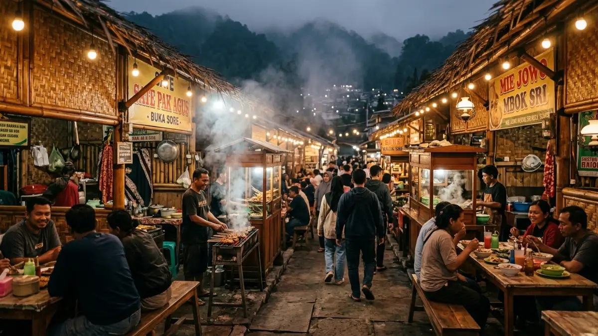
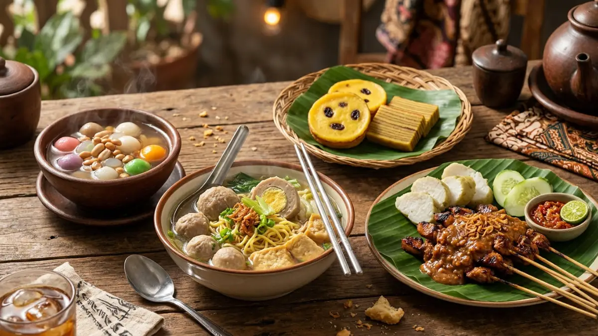

Ilustrasi suasana dusun kuliner Batu dengan bangunan tradisional dan pemandangan alam pegunungan.Dusun kuliner Batu adalah sebutan umum untuk kawasan atau sentra jajanan dan rumah makan di Kota Batu, Jawa Timur, yang menyajikan aneka menu khas dataran tinggi dalam suasana pedesaan. Kawasan ini populer sebagai tujuan wisata kuliner sekaligus tempat bersantai bagi wisatawan.
- Apa Itu Dusun Kuliner Batu?
- Mengapa Dusun Kuliner Batu Diminati Wisatawan?
- Apa Saja Daya Tarik Utama Dusun Kuliner Batu?
- Menu Apa Saja yang Umum Ditemukan di Dusun Kuliner Batu?
- Bagaimana Suasana dan Konsep Tempat di Dusun Kuliner Batu?
- Kapan Waktu Terbaik Berkunjung ke Dusun Kuliner Batu?
- Apa Saja Kesalahan Umum Saat Berkunjung ke Dusun Kuliner Batu?
- Tips Praktis Menikmati Dusun Kuliner Batu
- Perbandingan Dusun Kuliner dengan Restoran Kuliner Modern di Batu
- Kesimpulan
- FAQ
Apa Itu Dusun Kuliner Batu?
Dusun kuliner Batu adalah istilah yang mengacu pada kawasan kuliner bernuansa desa di wilayah Kota Batu, tempat wisatawan dapat menikmati berbagai hidangan khas sambil merasakan suasana pedesaan pegunungan.
Kota Batu dikenal sebagai kota wisata dengan udara sejuk karena berada di dataran tinggi lereng pegunungan di Jawa Timur.
Karakter geografis ini membuat banyak kawasan kuliner di Batu mengusung konsep terbuka, semi outdoor, atau bernuansa alam, sehingga muncul istilah "dusun kuliner" untuk menggambarkan suasana khas tersebut.
Konsep dusun kuliner biasanya menggabungkan elemen berikut:
- Bangunan atau lapak bernuansa tradisional dari kayu maupun bambu
- Area terbuka dengan pemandangan kebun, sawah, atau perbukitan
- Kumpulan pedagang atau rumah makan dalam satu kawasan
- Menu khas lokal yang jarang ditemukan di kota besar
Konsep ini menyasar wisatawan yang menginginkan pengalaman kuliner sekaligus suasana yang berbeda dari restoran modern di perkotaan.
Mengapa Dusun Kuliner Batu Diminati Wisatawan?
Dusun kuliner Batu diminati karena memadukan kuliner khas dataran tinggi dengan suasana alam pegunungan yang jarang ditemukan di kawasan perkotaan pada umumnya.
Beberapa alasan utama yang membuat kawasan ini menjadi tujuan wisata favorit:
Apa Saja Daya Tarik Utama Dusun Kuliner Batu?
Daya tarik utama dusun kuliner Batu terletak pada kombinasi suasana sejuk pegunungan, konsep tempat makan yang unik, dan variasi menu khas lokal yang autentik.
Beberapa daya tarik tersebut meliputi:
- Suhu udara yang sejuk sepanjang hari, cocok untuk bersantap tanpa merasa gerah
- Suasana pedesaan yang menenangkan dan jauh dari kebisingan kota
- Variasi menu khas seperti sate kelinci, jagung bakar, dan aneka olahan susu segar
- Harga makanan yang umumnya lebih terjangkau dibandingkan restoran di kawasan wisata premium
- Cocok untuk kunjungan keluarga, rombongan wisata, maupun acara komunitas
Kombinasi faktor tersebut menjadikan dusun kuliner Batu sebagai pelengkap ideal bagi wisatawan yang sudah berkunjung ke destinasi wisata alam di Batu seperti kawasan pegunungan, agrowisata, dan taman rekreasi keluarga.
Menu Apa Saja yang Umum Ditemukan di Dusun Kuliner Batu?
Menu yang umum ditemukan di dusun kuliner Batu meliputi sate kelinci, aneka bakar-bakaran, jagung bakar, dan minuman hangat khas dataran tinggi seperti wedang ronde dan susu segar.
Beberapa kategori menu khas yang sering dijumpai:
- Sate kelinci, yang menjadi salah satu hidangan ikonik di kawasan Batu
- Aneka olahan ayam dan ikan bakar dengan sambal khas pedesaan
- Jagung bakar dan ubi bakar sebagai camilan sore hari
- Minuman hangat seperti wedang ronde, bandrek, dan susu segar hasil peternakan lokal
- Aneka gorengan dan jajanan pasar tradisional
Variasi menu ini disesuaikan dengan iklim sejuk Kota Batu, sehingga makanan dan minuman hangat lebih banyak ditawarkan dibandingkan menu dingin.

Ilustrasi aneka menu khas dusun kuliner Batu seperti sate kelinci, jagung bakar, dan minuman hangat.Bagaimana Suasana dan Konsep Tempat di Dusun Kuliner Batu?
Suasana di dusun kuliner Batu umumnya bernuansa pedesaan terbuka dengan bangunan sederhana, area duduk lesehan atau saung, serta pemandangan alam di sekitarnya.
Ciri khas suasana yang biasa ditemui:
- Bangunan berbahan kayu atau bambu dengan desain sederhana dan alami
- Area lesehan maupun saung yang nyaman untuk duduk berlama-lama
- Pemandangan kebun, sawah, atau perbukitan sebagai latar belakang
- Pencahayaan hangat pada malam hari yang menambah kesan homy
- Ruang terbuka yang ramah untuk anak-anak dan rombongan besar
Konsep semacam ini menjadikan pengalaman makan tidak hanya soal rasa, tetapi juga suasana yang mendukung waktu berkualitas bersama keluarga atau kerabat.
Kapan Waktu Terbaik Berkunjung ke Dusun Kuliner Batu?
Waktu terbaik berkunjung ke dusun kuliner Batu umumnya sore hingga malam hari, saat suhu udara lebih sejuk dan suasana kawasan terasa lebih hidup.
Beberapa pertimbangan waktu kunjungan:
- Sore hari cocok untuk menikmati suasana sambil menghindari terik matahari siang
- Malam hari menawarkan suasana hangat dengan pencahayaan khas dan udara yang lebih dingin
- Akhir pekan dan musim liburan biasanya lebih ramai, sehingga disarankan datang lebih awal
- Hari kerja umumnya lebih tenang dan cocok bagi yang ingin bersantai tanpa keramaian
Pengunjung disarankan mengecek jam operasional masing-masing lapak atau rumah makan secara langsung karena dapat berbeda antara satu tempat dengan tempat lainnya.
Apa Saja Kesalahan Umum Saat Berkunjung ke Dusun Kuliner Batu?
Kesalahan umum saat berkunjung ke dusun kuliner Batu antara lain tidak membawa pakaian hangat, datang saat jam paling ramai tanpa reservasi, dan tidak mengecek jam operasional terlebih dahulu.
Beberapa kesalahan yang sebaiknya dihindari:
- Tidak membawa jaket atau pakaian hangat, padahal suhu malam hari di Batu bisa cukup dingin
- Datang pada jam puncak akhir pekan tanpa memesan tempat terlebih dahulu
- Mengabaikan variasi harga antar lapak sehingga anggaran membengkak
- Tidak menyesuaikan pilihan menu dengan kondisi kesehatan, misalnya alergi tertentu
- Berkunjung tanpa mengecek ulasan atau informasi terbaru mengenai jam buka
Menghindari kesalahan-kesalahan tersebut membuat pengalaman berkunjung menjadi lebih nyaman dan efisien.
Tips Praktis Menikmati Dusun Kuliner Batu
Berikut tips praktis agar kunjungan ke dusun kuliner Batu lebih maksimal dan nyaman:
- Datang lebih awal saat akhir pekan untuk menghindari antrean panjang
- Bawa pakaian hangat karena suhu udara cenderung dingin, terutama malam hari
- Coba berbagai menu khas dalam porsi kecil agar bisa mencicipi lebih banyak variasi
- Tanyakan rekomendasi menu andalan kepada pedagang setempat
- Siapkan uang tunai secukupnya karena tidak semua lapak menerima pembayaran digital
Perbandingan Dusun Kuliner dengan Restoran Kuliner Modern di Batu
Dusun kuliner umumnya menawarkan suasana pedesaan dan harga lebih terjangkau, sedangkan restoran modern di Batu lebih menonjolkan fasilitas lengkap dan konsep interior kekinian.
| Aspek | Dusun Kuliner | Restoran Modern |
|---|---|---|
| Suasana | Pedesaan, terbuka, alami | Interior modern, ber-AC |
| Harga | Umumnya lebih terjangkau | Bervariasi, cenderung lebih tinggi |
| Menu | Khas lokal dan tradisional | Kombinasi lokal dan internasional |
| Fasilitas | Sederhana | Lebih lengkap |
Pemilihan antara keduanya kembali pada preferensi wisatawan, baik yang mengutamakan suasana autentik maupun kenyamanan fasilitas modern.
Kesimpulan
Dusun kuliner Batu menawarkan pengalaman wisata kuliner yang memadukan suasana pedesaan pegunungan dengan ragam menu khas lokal.
Kawasan ini cocok dikunjungi sore hingga malam hari, terutama bagi wisatawan yang ingin menikmati kuliner sambil bersantai di udara sejuk khas Kota Batu.
FAQ